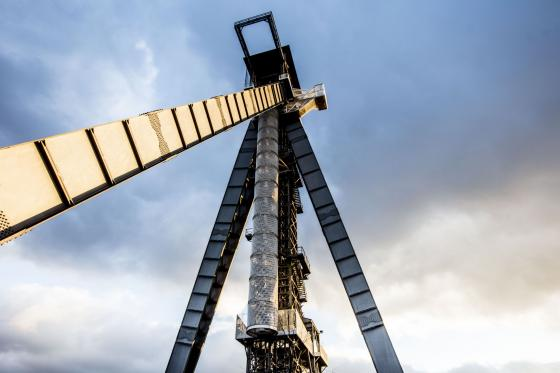

Missie
C-mine is een creatieve hotspot voor artistiek talent, geclusterd op een unieke industriële mijnerfgoedsite. Geworteld in het verleden helpt C-mine de toekomst vormgeven. Door sterke partnerships aan te gaan en in dialoog te staan met diverse artistieke actoren uit verschillende disciplines. Door de brede community te betrekken in een veelzijdige context rond studie, onderzoek, ontwerp, innovatie, creatie en reflectie.
C-mine wilt

- kunstenaars, artiesten, ondernemers, studenten, ... boven de eigen mogelijkheden en ambities uittillen;
- de cultuurzoekers, erfgoedbezoekers, studenten, kinderen, bezoekers, toeristen, omwonenden, ... inspireren met nieuwe inzichten en belevingen;
- de stedelijhke omgeving en regio versterken in haar artistieke en ontwerpgerichte innovatie en creatie
Visie

Het is de ambitie van C-mine om samen met alle campusbewoners
- een community te ontwikkelen die elkaar en bezoekers ideeën en inspiratie geeft;
- een kwalitatief artistiek bezoekersprogramma aan te bieden binnen de beeldende en podiumkunsten, design en film;
- uit te blinken met dit innovatieve en internationale programma op vlak van ontwikkeling, productie, presentatie, participatie en reflectie;
- te zorgen voor authentieke verbindingen op de site, met de wijk(en) en de andere Genkse sites, zoals Thor park en Labiomista;
- één van de meest toonaangevende creatieve sites van Limburg, Vlaanderen en de Euregio te worden.
Bron is https://c-mine.be/missie-visie